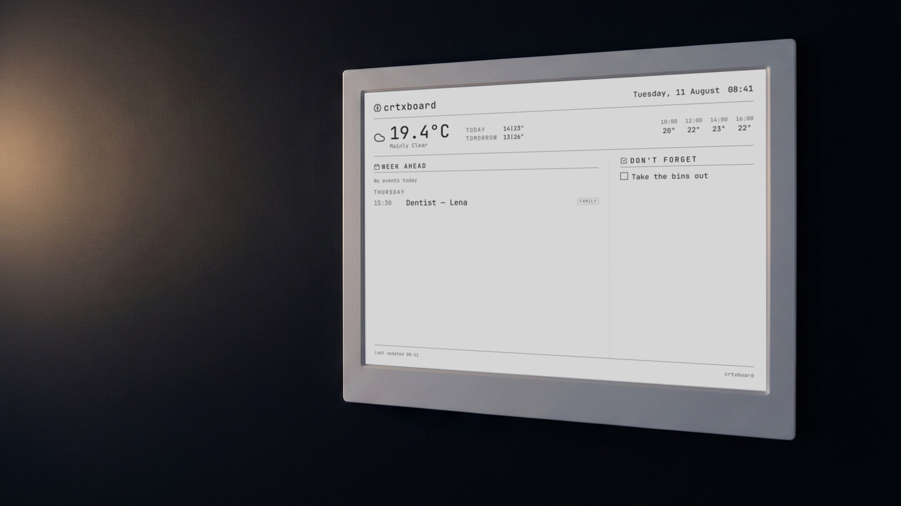

You speak. The wall fills in.
on the wall — you opened nothing
Voice message · Telegram
day after tomorrow dentist for Lena at half three and don’t forget to take the bins out

on the wall — you opened nothing
day after tomorrow dentist for Lena at half three and don’t forget to take the bins out
Nothing opens after you click, and it doesn’t ask you for anything.
Counted. Thank you — that one is genuinely useful.
Both answers are a yes, so the politeness cancels out. It is the one question on this page whose answer I cannot guess, and it decides which half of this is the product.
Optional, and more useful to me than the click above. Whiteboard, shared calendar, a note on your hand, nothing at all: whatever it actually is.
The single most useful sentence this page can collect is “I don’t — I just forget.” Five of your own scenarios are worth more than a hundred agreeable clicks.
Voice at the wall is not new. The narrow thing crtxboard does differently is one free-form sentence instead of a list command, sorted on a machine you chose, onto a display that isn’t lit.
Compiled by hand in August 2026 from public product pages, not from testing. Nothing in it is benchmarked. If a cell is wrong, open an issue and it changes.
| Capability | crtxboard | Dæly · Hearth · Skylight | Echo Show | TRMNL | hass-eink-dashboard |
|---|---|---|---|---|---|
| Takes spoken input at all | |||||
| One free-form sentence, several things in it, no command form | |||||
| Turns what you said into dated entries and open loops | |||||
| Transcription and structuring can stay on hardware you own | |||||
| Output is unlit E-Ink, not a backlit tablet | |||||
| You can buy the hardware from them today |
Echo Show has done voice at the wall for years, at €329. That is not in dispute and nothing here claims otherwise. The difference is rows two and four: a whole thought said the way you’d say it to a person, taken apart on a machine you picked rather than one picked for you. Whether that is worth anything to you is the question above.
The wall is what’s true all day. The briefing arrives once, by e-mail, before the day starts — and it is not the same list again: it decides what counts today and it says out loud what has been sitting untouched.
This is the second half of the product, and the point at which it stops being a calendar. It goes out over SMTP, so hosting it yourself means giving it a mail server to send through.
The bike service. Said twice, nothing since Friday.
The bins went out on time.
Example briefing, same household as the panel above
It runs on a screen you already have.
The board is a PNG fetched over HTTP. Anything that can open a URL can show it, so the cheapest way in costs nothing and the list starts there.
E-Ink is the one this was built for, and the reason is not that the others are compromises — the phone genuinely works, the drawer tablet genuinely works. It is that a panel with no backlight is the only one on that list that can hang in a hallway without being a lit rectangle in the evening, that puts no microphone in the room, and that keeps showing the last board it drew after the power goes off. All of which makes it the best surface for this rather than the requirement for it, and the free ones at the top of the list are still where I would start.
Three ways. What changes is who does the work, who is liable, and who notices when it breaks.
What you would be paying me for is not really “hosting”, which is a word for renting a machine, and the machine is the cheap part of this. I transcribe, I sort, and I notice when it breaks — those three, which happen to be exactly the three things a small box sitting in a cupboard does badly or not at all.
“Nothing leaves your house” would be a lie in all three modes, so it is not written anywhere on this page. Your voice message reaches Telegram’s servers before anything of yours touches it — that is how the bot gets the file at all. Here is the rest of it, per mode.
| What | All on your machine | Your machine + APIs | My machine |
|---|---|---|---|
| The audio you recorded | Telegram, then your own box | Telegram, then your transcription provider | Telegram, then me |
| The words you said | Stays on your box | Your language-model provider, on your key | Me — I run the model |
| The board image | Your box → your screen | Your box → your screen | My box → your screen |
| Your rough location, for the weather | open-meteo, on every render | open-meteo, on every render | open-meteo, on every render |
| Your calendar, if you connect one | |||
| The morning briefing | Your mail server | Your mail server | Mine |
Which leaves the question of what local transcription is actually worth, given that Telegram has already had the file. It is worth this: the recording is not then handed to a second company, and the words go only where you pointed them — a considerably smaller claim than the one usually made on pages like this one, with the advantage that it survives someone reading the source.
Encrypted in transit and encrypted on the disk. Your entries are never used to train anything, and never sold or passed on. The audio recording is discarded once it has been transcribed. Ask for your data and you get it; ask for it to be deleted and it is gone, along with the account. The subprocessors are named rather than summarised: Telegram carries the message, open-meteo answers the weather, Google if you connect a calendar, Hetzner in Germany runs the machine, and a payment provider named in the terms takes the payment. Transcription and sorting happen on that machine, which is the part you are paying for.
There is one build. No gated feature, no licence check, no code path that behaves differently depending on who is running it — the hosted backend is a URL in a config field, and both doors lead into the same AGPL-3.0 repository. So which one you take comes down to how you would rather spend your evenings, and not to which version of this you were judged to deserve.
| Trade | You do the work | I do the work |
|---|---|---|
| You get | Nothing of yours reaches me at all. Not the audio, not the words, not the board. | It runs without you. Nothing to update, nothing to restart, no mail server to configure. |
| You give | A box, electricity, and attention. | Money. |
The strongest argument for the left column is a legal one rather than a technical one. A single person running a box for their own household sits inside the GDPR household exemption, Art. 2(2)(c), which means nobody here is anybody else’s data controller and no processing agreement has to exist. The parties in the table above do not go away — Telegram still carries the file, open-meteo still gets the coordinates — but I am not one of them, and there is nothing between you and them that has to be trusted. I have nothing to sell that competes with that, which is worth saying out loud on a page that is also trying to sell you something.
The strongest argument for the right column is an argument against myself. A self-hosted setup fails silently: the bot quietly stops answering, the panel goes on showing Tuesday for three days, and nobody in the household notices, because this is precisely the object that nobody ever opens. That is not a hypothetical risk offered up for balance — it is the ordinary failure mode of every unattended box in every flat, mine included, and the only thing that has ever fixed it is somebody whose job it is to look.
The objection is usually “so now I need an API subscription too.” You don’t, and if you choose one anyway the number is small enough to write out in full. A busy household sends on the order of ten messages a day, so 200–300 a month. Sorting one costs roughly 700 tokens in and 200 back. At small-model prices — about $0.10 per million tokens in and $0.40 out — that is 140–210k tokens in and 40–60k out, which comes to €0.03 to €0.05 per household per month. The workings are written out so you can redo them against your own provider instead of taking the figure from me. Run the model locally instead and it costs what your electricity costs, which is the one number I cannot quote for you.
What it does, what it doesn’t, and what nobody has measured. In that order, because the third one is the one that matters.
Accuracy of the sorting step is structurally unmeasurable.
Not “not measured yet”. There is no ground truth for whether a sentence should have become an appointment on Thursday or a loose reminder, because the only person who knows is the one who said it, and their messages are the one corpus that cannot be collected to find out. No benchmark exists, no labelled set exists, and building one out of a household’s own voice notes would defeat the thing that makes it worth running at all.
So there is no accuracy number anywhere on this page, and there will not be one until that changes. Everything above describes what the system does, not how well it does it.
What happens when it gets one wrong is worth saying plainly, because it will. A dentist appointment lands as a loose reminder instead of Thursday at half three, or “next Tuesday” becomes this one. It is wrong on the wall, in front of the household, until someone says so — and you say so the same way you said it the first time, in one message. Nothing is lost and nothing has to be re-entered. But it is a system that is occasionally confidently wrong in a place you will read it, and that is the honest shape of the trade.
Down here on purpose. Nothing above needed it.
api.telegram.org, which is why Telegram sees the audio first in every mode.
About €7 a month, per household. Monthly, cancel whenever you like.
Start — €7 a monthOr take the other door: the software is on GitHub under AGPL-3.0, it is the same build, and you can have it running on your own box tonight without asking me. Nothing is gated and there is no licence check to fail.
If you are doing neither today, the click that helps most is still the one up there.